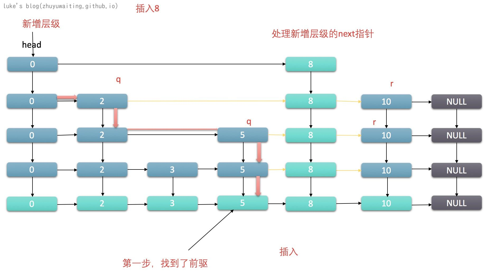

前言：
LinkedHashMap和TreeMap实现了Hash表的有序访问，但是LinkedHashMap和TreeMap都不是线程安全的，ConcurrentHashMap实现了线程安全，却又是无序的Hashmap,而ConcurrentSkipListMap，即是线程安全的，也是有序的hash表实现。
其内部有序性是通过跳表来实现的。
什么是跳表
跳表（SkipList）是一种随机化的数据结构，通过“空间来换取时间”的一个算法，建立多级索引，实现以二分查找遍历一个有序链表。时间复杂度等同于红黑树，O(log n)。但实现却远远比红黑树要简单。
结构：


跳表可参考 https://time.geekbang.org/column/article/42896
使用示例
1 | public static void main(String[] args) { |
1 | [1,24] [11,24] [2,24] |
说明： 按照key的字符串顺序排序的，所以 11<2
源码分析
数据结构
1 | * Head nodes Index nodes |

重要方法：
属性
1 | // base Level Header |
index类
1 | static class Index<K,V> { |
说明： index 提供了基础的判断节点是否删除，和进行right指针修改的能力
Node 类
1 | static final class Node<K,V> { |
说明：
node节点封装了删除节点标记节点等等基础操作。
findPredecessor
1 | // 获取比key 小的 baseLevel node 或者返回baseLevel header 如果没找到的话， 在查找的时候，清除已经删除的节点的 index |

get
1 | // 获取某个值 |
说明：key对应的节点，肯定在其前驱之后，于是先查找前驱节点，然后向后找key，沿途清理无效节点。找到返回v，没找到则返回null
put
1 | public V put(K key, V value) { |
说明: put的核心点在于两步：
- 插入节点
- 新增index(两种情况，一种是只增加index，另一种是加index并且加一个层级)
- 不新增层级
- 新增层级
- 处理新增的index的next指针



remove
1 | public V remove(Object key) { |
说明：删除操作总共4步
- 找到前驱
- 找到节点
- 设置value 添加marker节点
- 删除节点和marker节点

size
1 | // 遍历 |
总结：
ConcurrentSkipListMap是对于跳表的一个典型的利用场景，并且利用CAS 自旋 删除的marker节点等等操作实现了线程安全。很巧妙